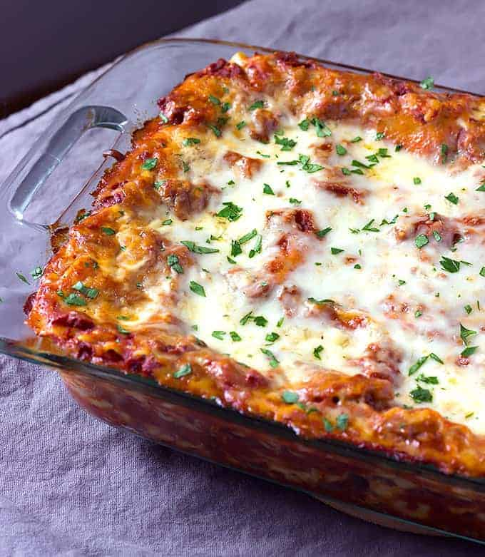

Lasagna

Description
The Best Classic Lasagna Recipe - Homemade lasagna full of pasta, ricotta, a homemade meatsauce, and tons of cheese. This is the world's best lasagna recipe!
Ingredients
- 1 lb. ground beef
- 1/2 lb. sweet Italian sausage
- 1 medium onion (chopped)
- 2 garlic cloves (minced)
- 1 (15 oz.) can tomato sauce
Step 1 - Layering your lasagna
- Spread a thin layer of pasta sauce on the bottom of a baking dish
- Make a layer of cooked lasagna noodles
- Spread an even layer of the ricotta cheese mixture
- Spread an even layer of meat sauce
- Repeat those layers two times
- Top it with a final layer of noodles, sauce, mozzarella, and parmesan cheese
Step 2 - How to bake your lasagna
- Cover the baking dish with aluminium foil
- Bake at 350 degrees Fahrenheit for 45 minutes
- Remove the foil and bake for 15 more minutes
- Let the lasagna rest for at least 15 minutes before slicing